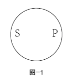
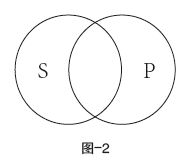
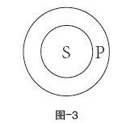
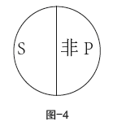
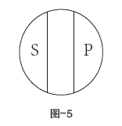

“逻辑”这个词来源于古希腊的“逻各斯”，是研究思维的学问。思维是人类认识世界的高级形式。与感性认识相比，即与许多动物也具有的感觉、知觉和表象相比，思维明显具有优越性——抽象性、概括性、间接性。
所谓抽象，就是人们在思想中只反映事物使他感兴趣的方面，并将这方面从其他方面分离或抽取出来。例如：在“桌子”这个概念中，只反映了桌子能方便读书、写字、吃饭等特性，而不管它放在什么地方、什么颜色、什么样式、用什么材料做成的，等等。
所谓概括，就是在我们的概念中，反映的不仅仅是一个事物的内容，而常常是很多事物所共有的内容。例如“卵生动物”这一概念，绝不仅指谁家的一只老母鸡，而是指所有用产卵方式繁殖的动物，鸟类、爬虫类、大部分的鱼类和昆虫几乎都是卵生动物。
所谓间接，就是我们在思想中不是每一次都直接依靠经验，而是能依靠已有的知识获取新的知识。古印度逻辑学家经常列举的一个例子：假如我们有“哪里有烟哪里就有火”的知识，当发现某处土岗有烟，就会得出“那个土岗有火”的结论，那么就没有必要爬上土岗去亲眼证实那里有火。
思维是认识世界的武器，原本是把世界作为认识对象的。当人类认识发展到一定阶段，人们发现只有符合逻辑规律和规则的思维，才能科学地认识世界。也就是说，只有把思维作为认识对象时，逻辑学才能产生。通常说，逻辑是研究思维的学问。这句话不错但不完善。大脑是思维的物质承担者，人的大脑是“特别复杂的一块物质”，抽象、概括、间接正是大脑工作的结果。每个人的思维发展和思维功能，既产生于一定的社会文化环境，同时又来源于一定的遗传基因。总而言之，思维是多方面的复杂过程。在这里，绝非一切都是逻辑学研究的。思维的本质、思维的起源以及思维与物质世界的关系等，属于哲学研究的范畴。生理学感兴趣的是思维依赖的物质基础——大脑的状况。心理学研究思维的正常发展和发挥职能的条件，研究社会文化的心理环境，以及感觉、意志、记忆等对思维的影响。遗传学力图揭示儿女从父母那里继承某种活动能力的秘密。控制论研究“思维机器”，研究用机器替代人的思维的技术。
人的认识是包罗万象的，各个学科都有极不相同的内容。但在不同的思想内容中可以发现本质上共同的东西，这就是思维的结构和形式。显然下面两个判断，内容相去甚远：
东条英机是被绞死的。
今天是个好天气。
但是，它们具有原则上相同的结构，因为无论哪个判断，都是断定某种固定的性质归属于某个思想的对象。用公式表示为：
S是P
S在这里是思想的对象，P是归属于对象的性质。再如：
所有三角形的内角之和都是180度，
直角三角形也是三角形，
所以直角三角形的内角之和也是180度。
所有液体都有弹性，
水银是液体，
所以水银有弹性。
以上这两个推理说的是不同的问题，但其推理的逻辑结构（形式）是相同的，在逻辑中写成这样：
M是P
S是M
∴S是P
——S和 P是通过M 这个共同概念相联系，才得出结论“S是P”。
逻辑撇开思想的具体内容而研究上述的思维结构，从而确立从一些真实判断引出其他真实判断的推理规律和规则。狭义的逻辑研究的是思维结构（或曰形式），所以称为“形式逻辑”，以区别于和认识论相同的辩证逻辑。形式逻辑虽然撇开思维的具体内容，但绝不忽视思维中运用的那些论断的真假。因为结论的真假取决于前提判断的真假。例如，资产阶级学者曾有这样的推论：
假如社会主义像月蚀一样不可避免，
那么为社会主义而斗争是没有意义的；
马克思主义断定社会主义是历史必然，
所以，马克思主义不应该号召为社会主义而斗争。
这似乎一切都是合乎逻辑的，但其实它的第一个判断（假如……那么……）是虚假的。波兰学者泽姆宾斯基曾给形式逻辑下了一个很不错的定义：“形式逻辑或狭义的逻辑是一门科学，其研究对象是产生于任何（从其形式或结构的观点来看）句子中的各种真伪关系，特别是从一些句子中引出另一些句子的关系。”
思维直接表现在语言中。人们表达意见、交流思想，只能借助语言。即使自我沉思，也不可避免地要借助语言，必须用语词语句把自己的思想固定下来，心理学称之为“无声语言”。
语言和思维的区别也是很明显的。语言是物质的，它作为符号的固定总和是可以听到的（有声语言）、看见的（书面语言）或触摸到的（盲人语言）。思维是精神的，它是现实在人们头脑中的反映，它本身听不到看不见。例如谁也不能说“我看见了你现在想什么”。不同的民族对于同一事物的正确反映是相同的，但是，不同的民族用来表示同一事物的语词，却可以是不同的。即使在同一民族中，也常常有不只一个语词来表达同一概念。在汉语中，“大夫”“先生”“医生”“郎中”是四个语词，但它们却可以表示同一事物，表达同一个概念。有时同一个语词可能表达不同的事物，语法中讲的“多义词”就是这个意思。
语言和思维又是有机统一的，不能分离。语言是思维的物质外壳，而思维则将意义赋予语言。法兰西诗人布瓦洛有句名言：
谁想得清，谁就说得明。
语言在作为思维的物质外壳的同时，也巩固思维的成果，成为保存和传达信息的工具，从而促进人类认识不断深化和发展。思维在发展和充实的同时，也使语言随之完善。
思维形式和语言表达以一定的方式相互吻合。要把任何一个对象从其他对象中分别出来，通常用一个语词，如“国家”“河流”；给一个对象作出断定，通常需要一个句子，如：“战争不是不可避免的”，“这朵花很美丽”。在第一种情况下，语词同概念发生了关系；在第二种情况下，语句同判断发生了关系。
从逻辑的角度看，概念是最简单的思维形式，借助它，我们以对象的本质特征为基础，把对象分别出来，并分门别类。例如概念“人”，把能制造工具、具有思维能力的动物结合为一个类。[书ji分 享V 信shufoufou]
概念都是通过语词表达的，但是并非所有语词都表达概念。一般语法书中，把语词分为实词和虚词两大类。一般说来，实词是表达概念的。如名词、动词和形容词都表达概念。虚词是不表达概念的，但虚词中的连词，如“如果……那么……”“而且”“或”等，反映了事物之间或事物情况之间的联系，所以它们可以表达概念。现代西方逻辑学者，把名词分为“专名”和“通名”。“通名”可以表达严格意义上的概念。但“专名”往往是指称，如“亚里士多德”“皇马足球俱乐部的7号队员”，不是严格意义上的概念，虽然有时可作为概念使用，可称为“类概念”。动词中的“是”，在语法中称为判断动词，但在逻辑中不可作为概念。
任何一个真实及反映现实的概念都有内涵和外延两个方面。概念的内涵就是概念所反映的对象的特征或本质。概念的外延就是概念反映的那一事物或那一类事物的总和，也就是概念确指的对象的范围。
逻辑学里也有虚假或虚构的概念，如“鬼”“山神”“上帝”等。这些概念并非凭空想象出来的，而是有客观根源的，是对现实的一种歪曲的反映，它们既不反映真实的事物，更谈不上反映事物的特征或本质。因此从严格意义上说它们既没有内涵也没有外延。但这些虚构的概念却有确定的含义，人们在使用它时，也知道它的含义。例如，基督教在使用“上帝”这一概念时，是指所谓全知全能的宇宙万物创造者和主宰者。而无神论在批判它时，也知道它的含义。
为了准确地使用概念，应该了解概念在外延方面的关系。按其性质来说，有相容关系和不相容关系两类。
两个概念的外延至少有一部分重合，这两个概念之间的关系，称为“相容关系”。相容关系有三种情况。
①同一关系
两个概念的外延全部重合，而内涵不同，这两个概念之间的关系，称为“同一关系”。如：“北京”和“中华人民共和国首都”。同一关系可用图-1表示。

图-1
②交叉关系
两个概念的内涵不同，而外延有部分重合，这两个概念之间的关系称为“交叉关系”。例如，“青年人”和“科学工作者”这两个概念的外延是交叉的。交叉关系可用图-2表示。

图-2
③从属关系
两个概念，如果其中一个概念的外延全部包含在另一个概念的外延之中，这两个概念之间的关系，称为“从属关系”；其中外延宽的那个概念叫“属概念”，外延窄的那个概念叫“种概念”。例如“人”和“黄种人”。从属关系用图-3表示。

图-3
两个概念的外延互相排斥，这两个概念之间的关系，称为“不相容关系”。这两个概念称为“不相容概念”。不相容关系有矛盾关系和对立关系两种。
①矛盾关系
两个概念其外延互相排斥，而且外延相加之和等于它们邻近的属概念的外延，这两个概念之间的关系，称为“矛盾关系”。这两个概念称为“矛盾概念”。例如“共青团员”和“非共青团员”。用图-4表示。

图-4
②对立关系
两个概念外延互相排斥，而其外延相加小于它们邻近属概念的外延。这两个概念之间的关系称为“对立关系”（或“反对关系”）。这两个概念称为“对立概念”。例如“黑马”和“白马”。用图-5表示。

图-5
判断是对事物有所断定的一种思维形式。判断有两个特征：一、必须有所断定，即必须有所肯定或有所否定；二、总是有真有假。
判断必须用语句来表达，但并不是所有的语句都表达判断。一个语句是否表达判断，要看它是否包含着对事物是否有所断定，以及是否可以说它是真的或是假的。
一般说来，陈述句都表达判断。在传统逻辑书里，通常说疑问句不表达判断，理由是它只是提出问题，但没有断定，无法判断真假。现代逻辑有许多分支，其中“问题逻辑学”就是一个崭新的分支。“问题逻辑学”认为，许多有预设的问句都是判断，如：“你是不是不再打你的妻子了？”在这个问句中就包含着一个预设，你曾经打过你的妻子。假如这个预设是真的，那么这个问句就是真的；若预设是假的，即你从来没打过妻子，这个问句就是假的。
判断和句子的不同，还表现在同一个判断可以用不同的语句表达，同一个语句也可以表达不同的判断。这同概念和语词的关系类同。
按照不同的根据把判断分为不同的种类。按判断主宾词联系方式的不同，判断分为六种：直言判断、假言判断、选言判断、联言判断、关系判断、模态判断。
推理是由一个或几个判断推出另一个新判断的思维形式，也是人们认识世界的一种逻辑方法。
推理是由判断组成的，判断是推理的元素。推理是由前提和结论两个部分组成。作为推理根据的判断叫“前提”，从中推出来的新判断叫“结论”。例如：
① 真理是不怕批评的；
所以怕批评的不是真理。
② A大于B；B大于C；所以A大于C。
③ 直角三角形的内角之和等于两个直角；
锐角三角形的内角之和等于两个直角；
钝角三角形的内角之和等于两个直角；
直角三角形、锐角三角形、钝角三角形是全部的三角形；
所以，任何三角形的内角之和都等于两个直角。
推理首先是一种重要的认识方法。无论在日常生活、工作还是在科学研究中，都要运用推理认识、理解客观事物，获得新的结论。
例如，英国著名科学家哈维在发现血液循环运动的过程中就借助了推理。他在大量的实验中，发现血液无论是在心脏还是动静脉中，总是持续不断地向一个方向流动。最后流到哪里去了？哈维进行这样推理：
如果血液在动静脉中互不联系和孤立地流下去，那么，它不可能总是向一个方向运动，所以，血液在动静脉中不是互不联系、孤立地流下去（即为一个环流）。
哈维在这个推理的基础上，又通过其他实验，终于发现了血液循环运动。
同概念、判断一样，推理也有自己的语言表现形式。推理的语言表现形式是复合句或句组。复合句或句组的情况是多种多样的。只有那些具有前提和结论关系的复合句或句组才表达推理。一般说来，表达推理的复合句或句组大都具有“因为……所以……”或者是“由于……因此……”等形式，但经过分析，可以判断出是否有前提和结论的关系，有这种关系就是推理，没有这种关系的就不是推理。
随着自然科学、社会科学和哲学的发展，各种流派一直在争论中相互诘难、相互借鉴。思维的正确性和论证性对于争辩具有最重要的意义。
亚里士多德在古代第一次对形式逻辑进行了认真而又系统的研究。他的注释者把他的逻辑著作搜集起来，命名为《工具论》，意思是“知识的工具”。亚里士多德本人把逻辑看作证明的工具、揭露诡辩的工具、发现知识和真理的工具。他阐明了概念、判断、推理和论证的学说，揭示了诡辩或谬误的根源和手法，正确地总结和确立了形式逻辑的一些基本规律和规则。在中世纪，亚里士多德的逻辑学说，在很大程度上被基督教的经院哲学歪曲了。
16世纪末到17世纪初，英国哲学家培根在他的《新工具论》中，适应科学发展的需求，奠定了归纳逻辑学说的基础。他认为，借助观察和实验揭示周围世界的因果联系，是归纳法和归纳推理的目的。
德国的哲学家和数学家莱布尼茨是数理逻辑的奠基人。他甚至浪漫地认为，将来符号逻辑会发展到一切辩论都可以通过铅笔和纸的计算变得很容易解决。莱布尼茨还清楚地发现并提出了逻辑思维规律之一——充足理由律。
数理逻辑的第一个比较完整的体系——后来被称为“布尔逻辑代数”。很多国家的学者都对数理逻辑进行过大胆的探索，也取得了一些喜人的成果。
数学方法在逻辑分析中运用，使形式逻辑成为一门概念清楚、证明方法缜密的科学。诚然，数理逻辑还有诸多不完善的地方，还有很大的发展空间。但是，数理逻辑在解决最困难的数学问题上已经得到了专门的运用，在控制论中——制造电脑，在技术中——组成网络电路。
随着带有大规模信息增长的科学技术革命的到来，随着科学分析和整体化的加强，随着科学认证手段和方法的空前复杂，随着新理论取代旧理论的速度大大加快，学习逻辑、提高逻辑思维能力，被尖锐地提到议事日程上。
程式逻辑（也称为“科学逻辑”）是一门崭新的逻辑学。它在现代科学中得到了广泛的应用。程式逻辑中的形式化方法、公理化方法，对于各个学科都有指导意义。今天，程式逻辑已有很多分支，如模态逻辑、评价逻辑、规范逻辑、时态逻辑、问题逻辑，等。
形式逻辑的发展历史，足以证明它的价值，足以证明康德的话多么荒唐——
形式逻辑从亚里士多德以后，没有前进一步。
在评价形式逻辑在人们的生活和认识中的意义时，经常甚至今天仍能听到的一种议论：
难道一定要学习逻辑吗？许多没有专门学习逻辑的人，也能正确推理呀，甚至有的还有重大发现呢！
——德国哲学家黑格尔有一段俏皮话：
人们没有消化生理学知识也可以消化食物。但毫无疑问，消化生理学知识可以使我们合理安排饮食。
诚然，没有形式逻辑学的基础知识一般也能正确思维，但学一点逻辑可以使我们在议论中少犯错误，可以使我们表达得更明白准确，更富有理性和论证性。也就是说，在提高文化修养的同时，也提高了我们思维的效能。莱布尼茨曾说，假如没有学习逻辑知识便获得了科学成果，那么在他自觉地学习并运用逻辑知识的情况下，就会大大地扩大他的科学成果。
即使在今天的社会生活中，逻辑学知识也是非常有用的。想一想，法官和律师不需要吗？警察和检查官不需要吗？搞统计和审计的人不需要吗？学习政治和经济的人不需要吗？学习语言和修辞的人不需要吗？新闻媒体的人不需要吗？练演讲口才的人不需要吗？即使普普通通的老百姓，为了谨防欺骗、识破诡辩，在有条件的情况下，学一点逻辑也非常好。
逻辑对于说谎者、诡辩者和掩盖真理的人是一种障碍。对于直觉主义、主观主义、实用主义等流派，逻辑学也是他们的“天敌”。19世纪末20世纪初，德国哲学家尼采就认为“逻辑是贫民仇恨的形式”，说“被压迫的人们在三段论的冷刃冲击中表现了自己的残暴性”。叔本华断言，真理本身像太阳一样不照自明，用不着逻辑。詹姆士及其追随者认为，思维规律没有现实意义，是主观自生的。宗教世界观的维护者对逻辑学恨之入骨，他们认为“神的启示”高于逻辑和真理。
列宁在《哲学笔记》中写道：“人的实践经过亿万次的重复，它在人的认识中以逻辑的形式固定下来。”这就是说，逻辑规律和规则是客观的，是不以人的意识、意志和愿望为转移的。